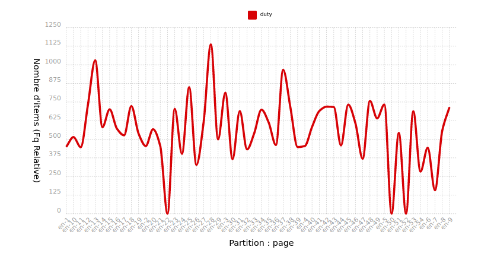
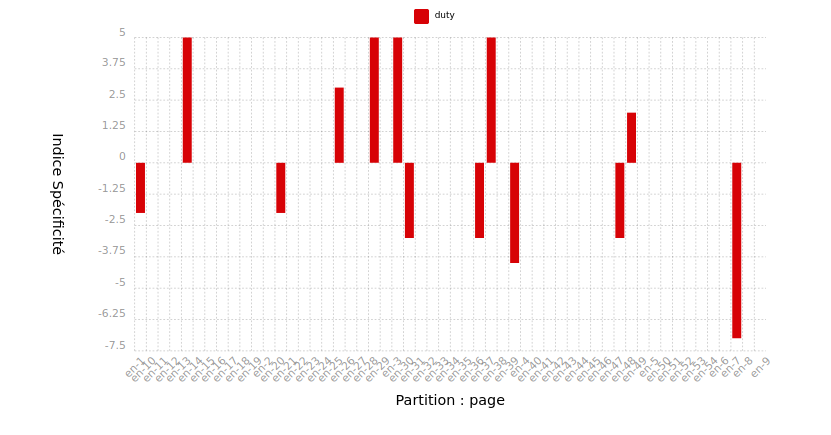

Notre analyse a été faite avec l'outil en ligne itrameur. Lors de notre analyse nous avons tenu compte de la morphologie flexionnelle des mots,
duty/duties, devoir/devoirs. L'outil itrameur ne permet que de faire une recherche sur un mot. Il a donc fallu concevoir des scripts pour unifier notre recherche et que les mots au pluriel soient transformés au singulier ainsi que les mots en majuscules soient en minuscules. Vous pouvez retrouver ces scripts sur notre github.
Anglais
Le mot 'duty' est le sujet de notre étude pour la partie anglais. Il a été volontaire d'uniformiser notre fichier en remplaçant toutes les variations et flexions du mot par une seule forme. De plus, il s’agit du fichier contextes-en.txt donc le fichier est construit sur la base de ce mot. Pour le reste, les résultats les plus présents ne sont pas surprenant, mais certains nous permettent déjà de dresser une tendance quant aux mots les plus fréquents qui sont mentionnés dans les articles qui contiennent le mot 'duty'. En regardant un peu plus loin dans les résultats, on tombe sur d'autres mots en lien avec la politique, les taxes et la gestion de services et finances publiques. A cette première étape, l'hypothèse de départ sur l'anglais semble être plausible.


Le mot 'duty' est réparti de la façon suivante. Ce résultat est obtenu en faisant une partition par page. Cela peut nous donner une piste pour observer la fréquence des cooccurrents de duty au niveau des différentes urls récupérées. On choisit de se concentrer sur l'analyse par fréquence relative pour avoir une idée plus représentative, ainsi que sur la sous- et sur-représentation du mot grâce à l'indice de spécificité.

Les cooccurrents permettent de finaliser nos résultats et d'infirmer ou confirmer nos hypothèses de départ. Dans les mots les plus fréquemment liés à 'duty' nous retrouvons bien un vocabulaire plutôt financier, politique ou de gestion. On retrouve également le mot 'call', qui, après avoir inspecté ses contextes, est bien le jeu Call of Duty. Ces deux résultats étaient à prévoir. Cependant, une partie de notre hypothèse n'est pas confirmée puisque nous ne retrouvons pas de lien entre 'duty' et un vocabulaire lié à des élections. D'ailleurs, en diminuant l'indice de spécificité, les mots sont davantage variés mais toujours dans les domaines cités précédemment, et non sur des élections.
Conclusion
Cette analyse permet de confirmer notre hypothèse faite pour l'anglais. Le mot "duty" est principalement associé à un vocabulaire politique, autant au niveau gestion, taxes ou politique interne à un pays. On ne retrouve rien par rapport au 'devoir' de voter par exemple, ce qui était attendu. On retrouve aussi quelques mentions du jeu vidéo Call of Duty. Les informations ont été récoltées sur la base des premiers résultats d'urls. Nous ne pouvons donc pas généraliser et dire que ce sont les uniques domaines de résultats dans lequel nous retrouvons le mot "duty".
Français
Après unification des différentes formes du mot devoir avec le script, le traitement itrameur nous indique que dans le fichier contexte-fr.txt il y a 511 occurences du mot. Cela semble peu mais mais peut s'expliquer par notre choix semantique. En effet, le mot 'devoir' peut également être interprété comme un verbe, mais notre analyse s'est limitée à la signification du mot en tant que substantif. Nous excluons, les différentes formes de morphologie flexionnelle de la conjugaison. Nul doute que cela aurait rajouté un grand nombre d'occurences. Nous pouvons voir également que dans le dictionnaire itrameur les mots qui reviennent souvent sont des articles ce qui semble logique puisque ces articles sont les mots les plus utilisés dans notre langue.
Il va être intéressant de voir les coocurents du mot "devoir" afin d'observer les mots qui gravitent autour de lui et de pouvoir en déduire si des contextes se détachent
Observation de la répartition du mot devoir sur l'ensemble des pages
L'analyse détaillée révèle que le terme le plus fréquemment associé à "devoir" est "vigilance", avec un indice de spécificité (IndSPe) notable de 40. Cette corrélation peut s'expliquer par le choix ciblé des URLs dans notre corpus. En effet, le concept du "devoir de vigilance" ressortait fréquemment au cours de nos recherches, et par conséquent, de nombreux liens dans notre corpus traitent spécifiquement de cette thématique. La fréquence élevée de cette association peut également être attribuée au fait que certains sites se focalisant sur le "devoir de vigilance" utilisent abondamment le mot "devoir" dans leur contenu.
Nous observons aussi un fort indspe pour les articles "Le" et "de". En effet lorsque le mot devoir est utilisé, il n'est jamais seul et est souvent entouré par ces articles. Comme dans le devoir de mémoire, le devoir de vigilance. En plus du domaine juridique, nous retrouvons d'autres notions comme l'éthique avec le devoir moral ou encore, l'historique avec le devoir de mémoire.
Conclusion
Cette analyse permet de confirmer notre hypothèse faite pour le français. Le mot "devoir" sur internet en français renvoit surtout au champ lexical du droit. Cela met en évidence une connexion étroite entre le mot "devoir" et le contexte juridique du "devoir de vigilance" ou la notion de "privé" dans notre ensemble de données. Cependant comme dit précedemment, il est important de contextualiser ces données car notre ensemble d'URLs contient beaucoup d'informations axées sur le domaine juridique.
Chinois
Aprés avoir traité les textes avec Thulac, nous avons abouti à une version tokenisée. En chinois, nous avons décidé de choisir « 责任 » comme la traduction du « devoir ». Examinons le dictionnaire : nous observons la présence de certains symboles malgré le prétraitement du fichier avec des « stopwords ». En chinois, « 责任 » est fréquemment associé à des termes tels que « 安全 » (sécurité), « 社会 » (société), « 企业 » (entreprise), « 生产 » (production) et « 发展 » (développement), surtout dans des contextes formels ou d'actualités.
Cette représentation graphique rend plus évidente la nature formelle de la majorité des mots reliés à « 责任 ». Toutefois, la présence du mot « 企业 » (entreprise) est surprenante. En effet, ces dernières années, la notion d'ESG (environmental, social, and corporate governance) a gagné en popularité dans le monde des affaires, et en chinois, elle est désignée par « 企业社会责任 » (responsabilité sociale des entreprises).
Conclusion
Avant de procéder à la recherche des URLs, j'étais déjà persuadé que je tomberais principalement sur des sites formels tels que ceux du gouvernement ou des agences de presse. Le résultat a parfaitement corroboré mon hypothèse. En effet, en chinois, le terme « 责任 » est couramment utilisé dans des contextes formels. Cependant, il est important de noter qu'il existe plusieurs autres traductions pour le mot « devoir » en chinois, compte tenu de sa nature polysémique. Au cours de ma recherche d'URLs, outre les sites gouvernementaux ou des agences de presse, la majorité étaient des sites d'entreprises, affirmant leur engagement en matière de responsabilité sociale. Cette tendance souligne la portée et l'importance croissante de la notion de responsabilité, non seulement dans les sphères gouvernementales, mais aussi dans le secteur privé.